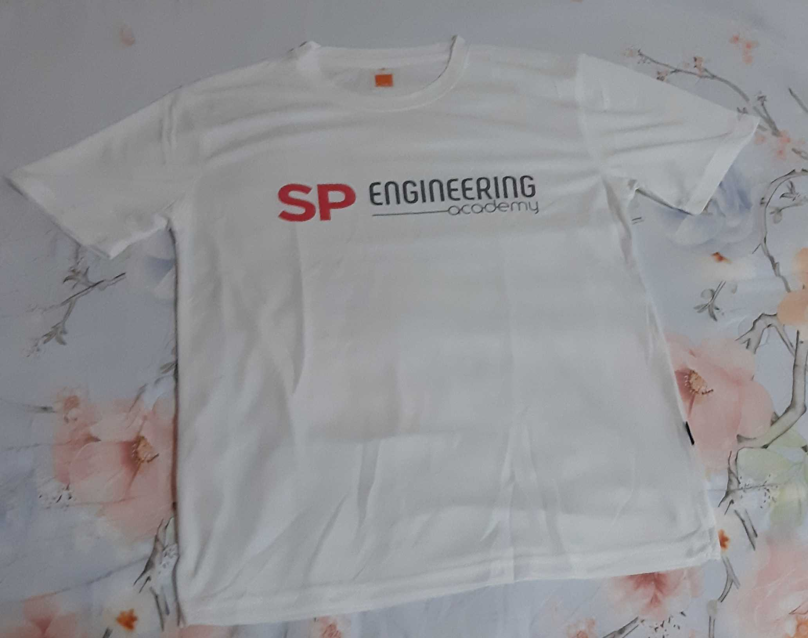
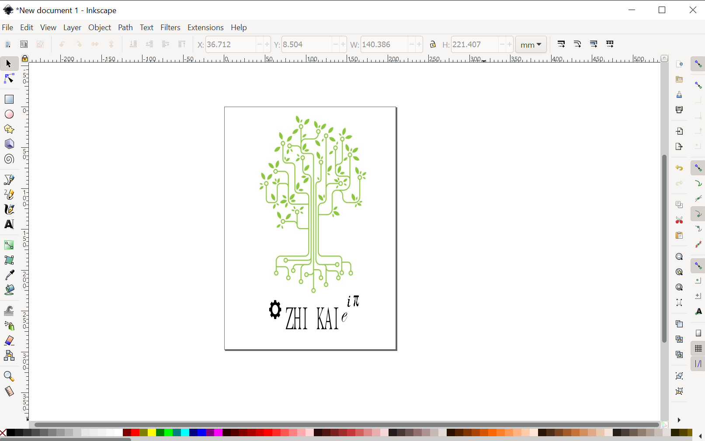
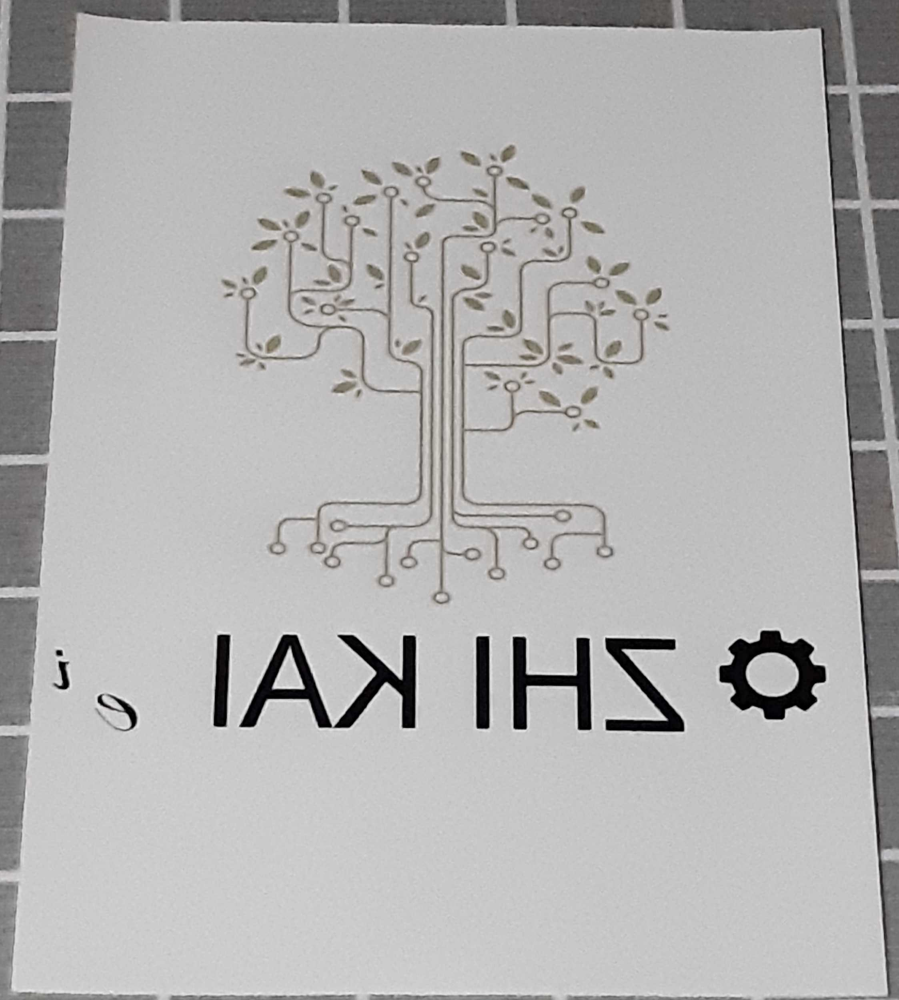

T-shirt Design
Contents:
Printing the front of the T-shirt
I used the EA logo design that our class has chosen for T-shirt printing. We used dye-sublimation printing to print the T-shirt. Printing of the T-shirt involves importing the logo to the Corel Draw software and printing it onto the glossy side of the sublimation paper.
{kind=link}
Afterwards, I flatten the T-shirt by heat pressing it using the heat press machine for about 5 seconds. Next, I trimmed off the redundant portions of the printed paper using the paper cutter. To ensure that the logo looks presentable on the T-shirt, I ensure that the logo is 4 inches from the collar and 4 inches away from the sides of the T-shirt. Finally, I used the Dupont tape to tape the sublimation paper and heat press the T-shirt for about 45 seconds.
Here is how the front of the T-shirt looked like:

Designing the back of the T-shirt
When I was designing the back of the T-shirt, I thought of incorporating both a tree and circuit design to portray both my care for the environment as well as my interest in engineering. I looked for vector images on Google for circuit tree designs and found a suitable image. Afterwards, I also looked for gear image and mathematical symbols on Google i.e. ∏, e and i to amplify the engineering aspect of the T-shirt design. After importing the images into the Inkscape software, I included my name for easy identification.
This is how the design looked like:

Facing setbacks
After I printed out the design on the sublimation paper, I realised that the colour of the circuit tree has turned dull and that I made a mistake of not adjusting the size of my name which resulted in the ∏ symbol being omitted. As the size limit for the design is A4, the image of the circuit tree appeared to be too small. With that, I had decided to create a new design for the back of the T-shirt.
Here is an image of the printed paper;

Creating a new design for the back of the T-shirt
When creating a new design, I looked for image of gears instead.This is because I feel that gears represents engineering and it looks simple and minimalistic. With that, I imported it into Inkscape and included my name.
Here is an image of the new design:

Printing the back of the T-shirt once again
Upon completing the design, I followed the same steps to print the T-shirt via dye sublimation and this is how the back of the T-shirt looks:

End